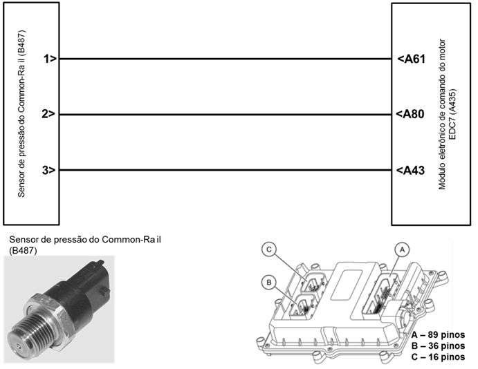
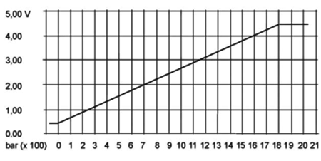

| 
Descrição da Falha
Circuito do sensor
de pressão do Common Rail com pressão muito alta, sinal muito alto.
Indicação de Falha
Luz de alerta acende
constantemente com os símbolos  e e  e ativa o alarme sonoro longo, com o veículo
e ativa o alarme sonoro longo, com o veículo
andando ou parado.
A LIM permanece ligada.
Estratégia de Monitoramento
O módulo EDC7 monitora os
limites
de tensão (tensão de alimentação, tensão do sensor) e bloqueio do
conversor AD
(analógico - digital).
Efeito da Falha
A
válvula de limitação de pressão abre e o motor volta a funcionar com
800 bar de pressão do Common-Rail.
Limitação de rotação em 2000
rpm e limitação de torque.
Possíveis Falhas
FMI 1: Pressão do Common-Rail
muito
alta.
FMI 4 : Nenhum sinal existente,
canal AD bloqueado, falha no módulo EDC7.
FMI 5: Curto circuito para o
massa.
FMI 6 : Curto circuito para o
positivo.
Sensor com defeito.
Aviso
  Não há
aviso específico para este código. Não há
aviso específico para este código.
Registros de Falhas em Outros
Módulos de Comando
Não.
Considerar os esquemas
elétricos do veículo
| Verificação
|
Medição |
Eliminação da
Falha |
| Sensor de pressão do Common-Rail, tensão de
alimentação. |
Utilize o Tester Box e consulte o manual
Verificação EDC7 C32:
- Medir a tensão entre o pino A43 e o pino
A61
Valor nominal:
4, 75 - 5,25 V |
– Verificar os cabos
quanto a rompimento ou oxidação
– Verificar as conexões
quanto a mau contato ou pino torto
– Substituir o sensor
de pressão do Common-Rail
– Caso não se verifiquem
falhas, determinar a razão para a abertura da válvula limitadora de
pressão conforme a lista das
etapas de verificação hidráulica |
| Sensor de pressão do Common-Rail, tensão
do sinal |
Utilize o Tester Box e consulte o manual Verificação EDC7 C32:
-
Medir a tensão entre o pino A80 e o pino
A61
- Com a linha 15 ligada, porém motor parado
Valor nominal:
0,5 V
- Com o motor funcionando e em marcha lenta
Valor nominal:
1,4 - 1,7 V
|
Curva característica do
sensor

Tester
Box

|